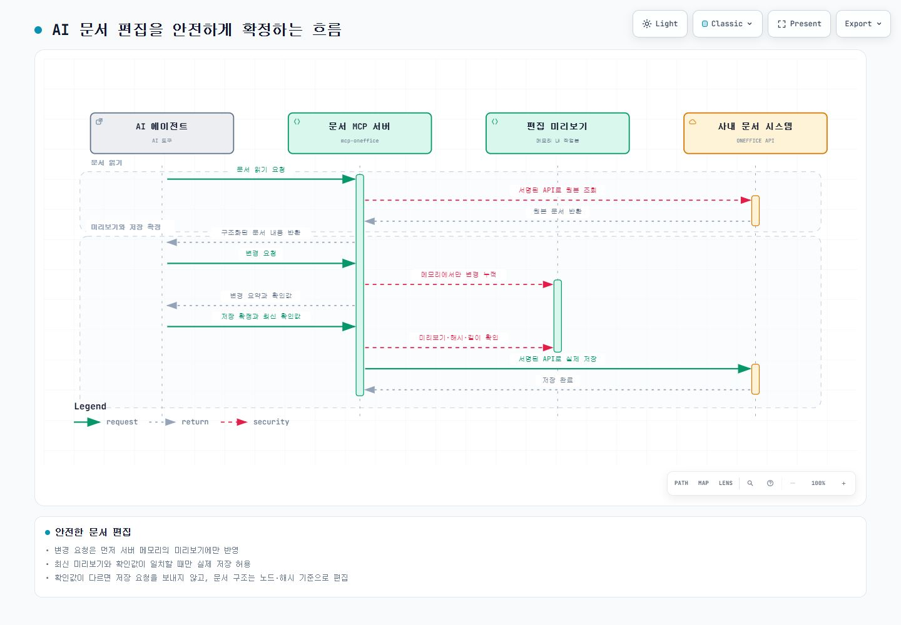

PROJECT 05 / AI·외부 연동
AI가 사내 문서를 안전하게 수정하도록 만든 MCP 서버
AI가 사내 웹 문서를 읽고 수정할 수 있게 연결했습니다. 변경 내용은 미리보기와 최신 상태 확인을 통과할 때 실제 문서에 반영합니다.
- 기간
- 문서 연동 개발
- 담당 역할
- 문서 연동 서버 설계·개발
- TypeScript
- Node.js
- MCP
- Playwright
문제
사내 문서 협업 도구에는 AI 에이전트가 문서를 다룰 공식 연동 방법이나 공개 API 문서가 없었습니다. 화면 자동화는 문서 구조나 로그인 상태가 바뀌면 깨지기 쉬웠고, AI가 오래된 변경안이나 의도하지 않은 내용을 바로 저장할 위험도 있었습니다.
AI가 만든 변경안을 사람이 확인한 뒤 저장하게 만드는 흐름을 설계했습니다.
저장 전 검증
- 서버가 문서 구조와 내용을 읽어 편집 세션을 엽니다.
- 수정 요청은 서버 메모리의 미리보기 작업본에 누적합니다.
- AI는 변경 요약과 최신 확인값을 받은 뒤 그 값을 포함해 저장을 요청합니다.
- 서버는 최신 미리보기 식별값, 문서 내용의 지문(hash), 대상 문서, 길이, 저장 확인 여부를 대조합니다.
- 값 하나라도 다르면 저장 API를 호출하지 않고, 모두 맞을 때 한 번 호출합니다.
해시는 문서 내용이 같은지 확인하는 변경 지문입니다. 이전 응답의 해시를 재사용하면 저장이 거부됩니다.
API 중심 연동
문서 읽기와 저장은 분석한 문서 시스템 API에 서명 정보를 붙여 호출했습니다. 문서 구조를 블록·표·노드 단위로 읽고, 변경할 노드와 변경 전 지문을 함께 확인해 이전 상태를 기준으로 잘못 덮어쓰는 일을 방지했습니다.
브라우저 자동화는 로그인 복구가 필요할 때 사용하고, 문서 조작은 API 호출로 처리했습니다.
검증과 운영
- 네트워크 없이 실행되는 구조·문서 변환·저장 흐름 검증과 실제 문서 시스템 API를 호출하는 통합 검증을 분리했습니다.
- 변경 요청이 실패하면 미리보기 작업본을 만들지 않고, 최신 확인값이 맞지 않으면 저장 없이 실패 처리했습니다.
- 사내 패키지로 배포하고 동료가 사용하며 발견한 입력 사례를 재현해 수정했습니다.
결과
AI가 사내 문서를 읽고 수정할 수 있는 공통 연동 지점을 제공했습니다. 문서마다 하나의 편집 작업본에 변경을 누적하고 최종 확인 뒤 저장하며, 최신 상태 확인이 실패하면 저장 API를 호출하지 않아 오래된 요청의 오저장을 막습니다.
문서 변경의 저장 보호 흐름
편집 세션의 최신 작업본과 미리보기 확인값을 대조하고, 저장 확인을 통과한 요청만 실제 문서에 반영합니다.
